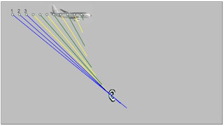

This model simulates the various path lengths of sound traveling from an airplane flying overhead. Since the speed of sound is constant, sound waves emitted at different locations reach the detector (depicted by an ear) at different times. Students can observe this effect by adjusting the ratio of the plane's speed to the speed of sound.